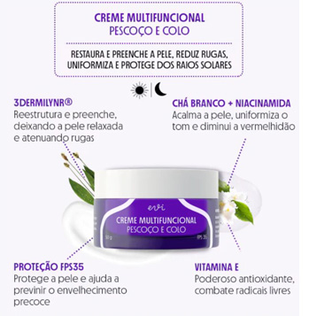

Blog Ana Rufatto
Moda: Tendências Verão / 2022
Por Ana Rufatto 17 de outubro de 2021
Tags: blog de moda, Brasil, dica de estilo,
dica de moda, dior, estilo, fashion, fashionista, look, look divo, look do dia, look inspiração,
looks,
moda, moda feminina, style, stylefashion, tendências 2022, verão 2022
As cores vibrantes são tendências no Verão 2022.
A nova estação sempre foi colorida e alegre. O calor sempre prevalece, e, por esse motivo, as peças
visam o bem estar e conforto.
Cores como laranja, pink, vermelho, verde limão e lilás foram destaques nos desfiles
internacionais.
Também o neon vem com força no Verão 2022.
É possível usar looks monocromáticos (apenas uma cor), ou fazer composições com cores diferentes,
mas
que combinam entre si.(é o famoso “color block”).
O vestuário é moderno, tem um ar mais fresco, uma vez que o calor é mais intenso.
Os looks do verão são vibrantes e refletem luminosidade. Afinal, e´ a estação da alegria.
fonte: foto Vogue – Globo
Beleza: Como Tratar a Pele Madura do Pescoço e Colo?
Por Ana Rufatto 27 de outubro de 2022
Tags: beauty, beleza, bem estar, blog de beleza, colo, creme para pescoço e colo, cuidados da pele,
dicas de beleza, evi, mulheres maduras, pele bem cuidada, pele madura, pelepele perfeita,
pelesaudavel,
pescoço, rugas, saude da pele, skincare
Como tratar a pele madura do pescoço e colo?
As regiões do pescoço e colo normalmente são negligenciadas quando a pessoa se
dedica
ao seu ritual de
skincare. Todavia, essa parte do corpo também necessita de cuidados específicos, que sofrem com a
incidência dos raios solares e as condições climáticas.
Dizem que o pescoço e colo são capazes de revelar a idade da pessoa. Isso assim ocorre
porque
surgem
manchas senis, flacidez, rugas e linhas de expressão. A pele, por sua vez, torna-se
áspera
e ressecada
em razão do reduzido número de glândulas sebáceas, causando menor hidratação e consequentemente
perda de
água.
O pescoço constantemente se movimenta devido ao músculo denominado plastima que “ocorre em faixas da
linha da mandíbula até a clavícula”. Até mesmo o “simples movimento de abaixar a cabeça, ou mesmo
uso
prolongado de celulares e notebooks, faz com que apareçam rugas horizontais nessa região”.
